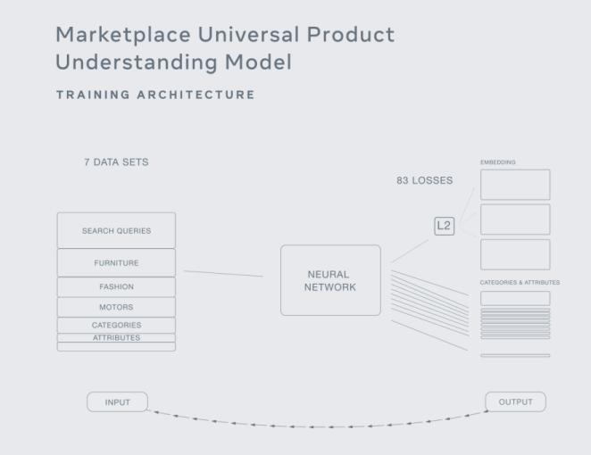

Destaques de Maio em IA
As 5 principais notícias e tendências da IA que cruzei em maio de 2020.
English version aqui.
Modelo BiT sendo usado após o pré-treinamento e aplicado a outras tarefas com poucos exemplos rotulados
Google disponibiliza BiT, o BERT para Visão Computacional
Em 21 de maio, a equipe de inteligência artificial do Google abriu o código do Big Transfer (BiT): um aprendizado geral sobre representação visual. Este é um esforço para ajudar aplicações de Visão Computacional a avançarem com modelos pré-treinados em larga escala. O uso do BiT é possível para obter desempenho de ponta em muitas aplicações, usando apenas alguns exemplos rotulados. Para fazer o ajuste fino desse modelo, eles também introduziram o “BiT-HyperRule”, uma abordagem heurística para selecionar hiper parâmetros, como taxa de aprendizado. Após a transferência de aprendizado, usando o conjunto de dados CIFAR-10, o modelo alcançou 64% e 95% de precisão média em 1 e 5 em One Shot Learning, respectivamente. O Google também mencionou que “o BiT-L combina ou supera resultados […] em vários benchmarks de visão computacional, como Oxford Pets e Flowers, CIFAR etc. “. Você pode verificar o artigo e o código.
A versão 2.2.0 do Tensorflow chegou
Depois de quase quatro meses após o TF 2.1.0, este mês o Google também lançou o Tensorflow 2.2.0. As principais atualizações incluem um novo Profiler para CPU / GPU / TPU para ajudar a identificar gargalos de desempenho, melhorias de desempenho na computação entre dispositivos por meio de tf.distrbuite, um novo tipo escalar para strings (de std :: string para tensorflow :: tstring) e a substituição do SWIG pelo pybind11 ao exportar funções C++. Também tivemos algumas melhorias no Keras, como o uso de lógicas de treinamento personalizadas com a substituição de Model.fit pelo ` Model.train_step` e o formato SavedModel que agora suporta todas as camadas internas do Keras (incluindo métricas, camadas de pré-processamento e RNN com monitoração de estado). Além disso, outro destaque é que eles abandonaram o suporte ao Python 2, que não é mantido desde janeiro de 2020. Por último, nesta versão, o TensorFlow requer a versão gast 0.3.3. Verifique o texto completo aqui.
NVIDIA lança A100 AI GPU: o melhor instrumento para o avanço da IA
Anunciado em 14 de maio durante o evento Nvidia GTC 2020, o A100 AI Chip possui 54 bilhões de transistores e 5 petaflops de desempenho sendo a mais poderosa plataforma de IA e HPC para data centers, seguindo a tendência de HPC após adquirir a Mellanox em março. Com base na arquitetura Ampere, o chip de 7 nanômetros pode ser usado para computação científica, gráficos em nuvem e análise de dados. Aqui estão alguns números, 20 vezes mais potente que a GPU Tesla V100 anterior, o A100 alcança 19.5 de potência computacional com seus 6.912 núcleos CUDA, 40 GB de memória, 1,6 TB de largura de banda e a terceira geração de Tensors Core. Uma aplicação desse chip é o sistema DGX, baseado em 8 NVIDIA A100 e direcionado ao setor de Inteligência Artificial, custa US$ 1 milhão. Podemos esperar ver o novo chip AI em serviços de nuvem em um futuro próximo. A Alibaba Cloud, AWS, Baidu Cloud, Google Cloud, Microsoft Azure, Oracle e Tencent Cloud já firmaram parceria com a NVIDIA.

Facebook AI divulga GrokNet para entendimento avançado do produtos
“um sistema universal de visão computacional projetado para compras. Ele pode identificar atributos de produtos dentre bilhões de fotos - em diferentes categorias, como moda, automóveis e decoração de casa”.
Diferente da maioria dos modelos que tem apenas uma categoria para aprender, o GrokNet foi treinado em sete conjuntos de dados, com vários tipos de supervisão e 83 funções de transferência, conseguiu prever categorias, atributos como cor e textura e prováveis consultas de pesquisa. O modelo do FB é treinado por um banco de dados colossal com cerca de 100 milhões de imagens retiradas da plataforma. A empresa também afirma que o sistema é capaz de identificar objetos que foram fotografados com condições de iluminação não muito boas e ângulos que não favorecem uma boa visualização do produto. Para dar ao modelo a capacidade de entender tarefas fáceis e difíceis, eles deram às tarefas uma combinação de peso e imagens para treinamento, ou seja, tarefas mais fáceis não precisam de muita supervisão e podem receber um peso menor. Comparado aos sistemas de atribuição de texto, o novo modelo pode prever anúncios de casas e jardins com precisão de 90%, contra 33% do antigo. O Facebook espera que “no futuro, o GrokNet possa ser usado para ajudar os clientes a encontrar facilmente exatamente o que estão procurando, receber sugestões personalizadas das vitrines sobre quais produtos são mais relevantes para eles e quais são compatíveis”. Verifique o anúncio oficial aqui.
Lançado o Sudo 1.9.0 com atualizações de segurança
Comando básico em nossos trabalhos diários com nossos amados sistemas Unix, o sudo permite que os usuários executem programas como root. Em maio, o sudo recebeu uma atualização da versão 1.9.0 após 9 anos no branch 1.8. Esta nova versão traz atualizações de segurança como, e centraliza o registro através do sudo_logsrvd, criando o sudo com a opção“ –enable-openssl ”, os dados são transmitidos através de um canal de comunicação criptografado (TLS). Agora também é possível usar softwares de terceiros para extrair dados de sessões sudo para auditoria. E embora o TF abandone o suporte ao Python 2, ele chega ao Sudo 1.9, onde os plugins podem ser escritos em python agora, que é ativado durante a compilação com a opção “–enable-python”. Verifique todas as alterações na versão completa aqui.
Quer receber as notícias e tendências mais importantes da IA em apenas um e-mail a cada final de mês? Inscreva-se abaixo e vou te enviar as 10 notícias mais importantes em Inteligência Artificial.
Subscribe to Edge AI Guru
Get the latest posts delivered right to your inbox